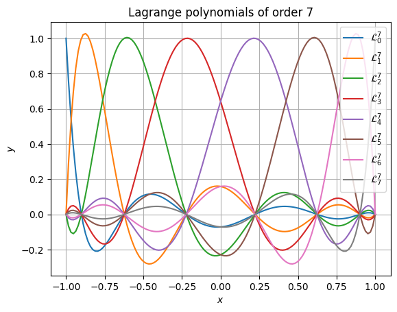
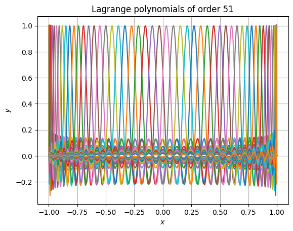
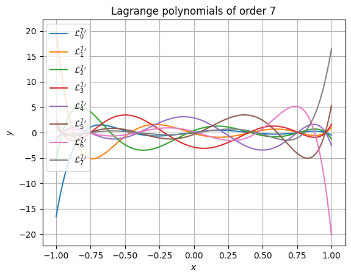
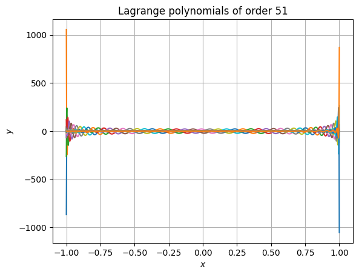
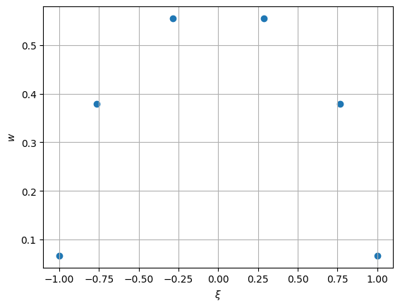
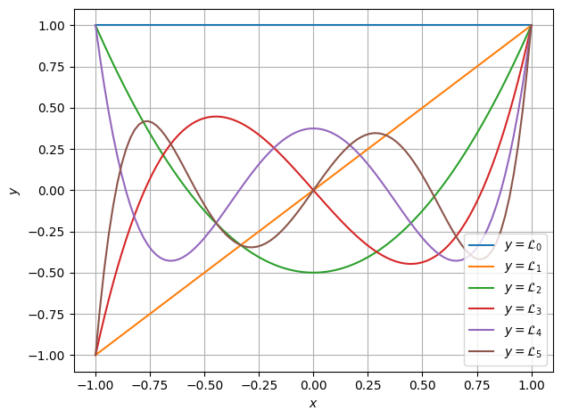
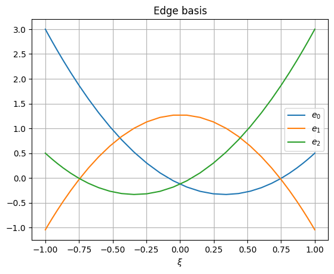

_mfv2d#
Internal module which includes functions written in C. These are mostly intended for speed, but some types are written in C for the exprese purpose of making it easier to use in other C functions.
Polynomials#
Since basis require Lagrange polynomials and their derivatives to be computed often, these are implemented in C, where the most efficient algorithms also preserve accuracy for large degrees of these polynomials.
Another commonly required operation is computing Gauss-Legendre-Lobatto nodes and associated integration weights.
- mfv2d._mfv2d.lagrange1d(roots: array_like, x: array_like, out: array | None = None, /) array#
Evaluate Lagrange polynomials.
This function efficiently evaluates Lagrange basis polynomials, defined by
\[\mathcal{L}^n_i (x) = \prod\limits_{j=0, j \neq i}^{n} \frac{x - x_j}{x_i - x_j},\]where the
rootsspecifies the zeros of the Polynomials \(\{x_0, \dots, x_n\}\).- Parameters:
roots (array_like) – Roots of Lagrange polynomials.
x (array_like) – Points where the polynomials should be evaluated.
out (array, optional) – Array where the results should be written to. If not given, a new one will be created and returned. It should have the same shape as
x, but with an extra dimension added, the length of which islen(roots).
- Returns:
Array of Lagrange polynomial values at positions specified by
x.- Return type:
array
Examples
This example here shows the most basic use of the function to evaluate Lagrange polynomials. First, let us define the roots.
>>> import numpy as np >>> >>> order = 7 >>> roots = - np.cos(np.linspace(0, np.pi, order + 1))
Next, we can evaluate the polynomials at positions. Here the interval between the roots is chosen.
>>> from mfv2d._mfv2d import lagrange1d >>> >>> xpos = np.linspace(np.min(roots), np.max(roots), 128) >>> yvals = lagrange1d(roots, xpos)
Note that if we were to give an output array to write to, it would also be the return value of the function (as in no copy is made).
>>> yvals is lagrange1d(roots, xpos, yvals) True
True
Now we can plot these polynomials.
>>> from matplotlib import pyplot as plt >>> >>> plt.figure() >>> for i in range(order + 1): ... plt.plot( ... xpos, ... yvals[..., i], ... label=f"$\\mathcal{{L}}^{{{order}}}_{{{i}}}$" ... ) >>> plt.gca().set( ... xlabel="$x$", ... ylabel="$y$", ... title=f"Lagrange polynomials of order {order}" ... ) >>> plt.legend() >>> plt.grid() >>> plt.show()
Accuracy is retained even at very high polynomial order. The following snippet shows that even at absurdly high order of 51, the results still have high accuracy and don’t suffer from rounding errors. It also performs well (in this case, the 52 polynomials are each evaluated at 1025 points).
>>> from time import perf_counter >>> order = 51 >>> roots = - np.cos(np.linspace(0, np.pi, order + 1)) >>> xpos = np.linspace(np.min(roots), np.max(roots), 1025) >>> t0 = perf_counter() >>> yvals = lagrange1d(roots, xpos) >>> t1 = perf_counter() >>> print(f"Calculations took {t1 - t0: e} seconds.") >>> plt.figure() >>> for i in range(order + 1): ... plt.plot( ... xpos, ... yvals[..., i], ... label=f"$\\mathcal{{L}}^{{{order}}}_{{{i}}}$" ... ) >>> plt.gca().set( ... xlabel="$x$", ... ylabel="$y$", ... title=f"Lagrange polynomials of order {order}" ... ) >>> # plt.legend() # No, this is too long >>> plt.grid() >>> plt.show()
Calculations took 7.338880e-04 seconds.
- mfv2d._mfv2d.dlagrange1d(roots: array_like, x: array_like, out: array | None = None, /) array#
Evaluate derivatives of Lagrange polynomials.
This function efficiently evaluates Lagrange basis polynomials derivatives, defined by
\[\frac{d \mathcal{L}^n_i (x)}{d x} = \sum\limits_{j=0,j \neq i}^n \prod\limits_{k=0, k \neq i, k \neq j}^{n} \frac{1}{x_i - x_j} \cdot \frac{x - x_k}{x_i - x_k},\]where the
rootsspecifies the zeros of the Polynomials \(\{x_0, \dots, x_n\}\).- Parameters:
roots (array_like) – Roots of Lagrange polynomials.
x (array_like) – Points where the derivatives of polynomials should be evaluated.
out (array, optional) – Array where the results should be written to. If not given, a new one will be created and returned. It should have the same shape as
x, but with an extra dimension added, the length of which islen(roots).
- Returns:
Array of Lagrange polynomial derivatives at positions specified by
x.- Return type:
array
Examples
This example here shows the most basic use of the function to evaluate derivatives of Lagrange polynomials. First, let us define the roots.
>>> import numpy as np >>> >>> order = 7 >>> roots = - np.cos(np.linspace(0, np.pi, order + 1))
Next, we can evaluate the polynomials at positions. Here the interval between the roots is chosen.
>>> from mfv2d._mfv2d import dlagrange1d >>> >>> xpos = np.linspace(np.min(roots), np.max(roots), 128) >>> yvals = dlagrange1d(roots, xpos)
Note that if we were to give an output array to write to, it would also be the return value of the function (as in no copy is made).
>>> yvals is dlagrange1d(roots, xpos, yvals) True
True
Now we can plot these polynomials.
>>> from matplotlib import pyplot as plt >>> >>> plt.figure() >>> for i in range(order + 1): ... plt.plot( ... xpos, ... yvals[..., i], ... label=f"${{\\mathcal{{L}}^{{{order}}}_{{{i}}}}}^\\prime$" ... ) >>> plt.gca().set( ... xlabel="$x$", ... ylabel="$y$", ... title=f"Lagrange polynomials of order {order}" ... ) >>> plt.legend() >>> plt.grid() >>> plt.show()
Accuracy is retained even at very high polynomial order. The following snippet shows that even at absurdly high order of 51, the results still have high accuracy and don’t suffer from rounding errors. It also performs well (in this case, the 52 polynomials are each evaluated at 1025 points).
>>> from time import perf_counter >>> order = 51 >>> roots = - np.cos(np.linspace(0, np.pi, order + 1)) >>> xpos = np.linspace(np.min(roots), np.max(roots), 1025) >>> t0 = perf_counter() >>> yvals = dlagrange1d(roots, xpos) >>> t1 = perf_counter() >>> print(f"Calculations took {t1 - t0: e} seconds.") >>> plt.figure() >>> for i in range(order + 1): ... plt.plot( ... xpos, ... yvals[..., i], ... label=f"${{\\mathcal{{L}}^{{{order}}}_{{{i}}}}}^\\prime$" ... ) >>> plt.gca().set( ... xlabel="$x$", ... ylabel="$y$", ... title=f"Lagrange polynomials of order {order}" ... ) >>> # plt.legend() # No, this is too long >>> plt.grid() >>> plt.show()
Calculations took 3.059791e-02 seconds.
- mfv2d._mfv2d.compute_gll(order: int, /, max_iter: int = 10, tol: float = 1e-15) tuple[array, array]#
Compute Gauss-Legendre-Lobatto integration nodes and weights.
If you are often re-using these, consider caching them.
- Parameters:
- Returns:
array – Array of
order + 1integration nodes on the interval \([-1, +1]\).array – Array of integration weights which correspond to the nodes.
Examples
Gauss-Legendre-Lobatto nodes computed using this function, along with the weights.
>>> import numpy as np >>> from mfv2d._mfv2d import compute_gll >>> from matplotlib import pyplot as plt >>> >>> n = 5 >>> nodes, weights = compute_gll(n) >>> >>> # Plot these >>> plt.figure() >>> plt.scatter(nodes, weights) >>> plt.xlabel("$\\xi$") >>> plt.ylabel("$w$") >>> plt.grid() >>> plt.show()
Since these are computed in an iterative way, giving a tolerance which is too strict or not allowing for sufficient iterations might cause an exception to be raised to do failiure to converge.
Basis#
In order to define a set of basis, which can be integrated, an integration
rule is defined by an IntegrationRule1D. This is essentially wrapped
result of compute_gll(), but as an object.
- class mfv2d._mfv2d.IntegrationRule1D(order: int)#
Type used to contain integration rule information.
- Parameters:
order (int) – Order of integration rule used. Can not be negative.
- nodes#
Position of integration nodes on the reference domain [-1, +1] where the integrated function should be evaluated.
- Type:
array
- weights#
Weight values by which the values of evaluated function should be multiplied by.
- Type:
array
Based on an integration rule, one-dimensional basis can be defined with the
Basis1D type. This
- class mfv2d._mfv2d.Basis1D(order: int, rule: IntegrationRule1D)#
One-dimensional basis functions collection used for FEM space creation.
- Parameters:
order (int) – Order of basis used.
rule (IntegrationRule1D) – Integration rule for basis creation.
Examples
An example of how these basis might look for a 3-rd order element is shown bellow.
>>> from matplotlib import pyplot >>> from mfv2d._mfv2d import Basis1D, IntegrationRule1D >>> >>> #Make a high order rule to make it easy to visualize >>> rule = IntegrationRule1D(order=31) >>> basis = Basis1D(3, rule)
Now the nodal basis can be plotted:
>>> plt.figure() >>> for i in range(basis.order + 1): ... plt.plot(basis.rule.nodes, basis.node[i, ...], label=f"$b_{{{i}}}$") >>> plt.grid() >>> plt.legend() >>> plt.xlabel("$\\xi$") >>> plt.title("Nodal basis") >>> plt.show()
Edge basis can also be shown:
>>> plt.figure() >>> for i in range(basis.order): ... plt.plot(basis.rule.nodes, basis.edge[i, ...], label=f"$e_{{{i}}}$") >>> plt.grid() >>> plt.legend() >>> plt.xlabel("$\\xi$") >>> plt.title("Edge basis") >>> plt.show()
- edge#
Edge basis values.
- Type:
array
- node#
Nodal basis values.
- Type:
array
- roots#
Roots of the nodal basis.
- Type:
array
- rule#
integration rule used
- Type:
Two dimensional basis are constructed from tensor products of one-dimensional
basis. As such the Basis2D type is merely a container for two
one-dimensional basis.
Topology#
Toplogy information is used when constructing continuity constraints on degrees of freedom. As such, these types allow for very quick and precice lookup of neighbours, computations of duals, and other required operations.
The base building block is the GeoID type, which is a combination of
a geometrical object’s index and an indicator of its orientation. Often time
functions will allow GeoID arguments to be replaced by 1-based integer
index, with its sign indicating orientation.
The index of a GeoID can also be considered invalid. For functions
that allow integer along with GeoID this would correspond to passing
the value of 0. In that case a value would be equivalent to False in
any boolean context.
- class mfv2d._mfv2d.GeoID(index: int, reverse=False)#
Type used to identify a geometrical object with an index and orientation.
For many functions which take
GeoIDargument(s), a 1-based integer index can be used instead, with negative values indicating reverse orientation and the value of0indicating an invalid value.There are also some convenience operators implemented on this type, such as the negation operator to negate orientation, as well as a comparison operator, which allows for comparison of GeoIDs with one another, as well as with
intobjects to check if they are indeed equivalent.- Parameters:
index (int) – Index of the geometrical object. Can not be negative.
reverse (any, default: False) – The object’s orientation should be reversed.
Examples
Here are some examples of how these objects can be used:
>>> from mfv2d._mfv2d import GeoID >>> id1 = GeoID(0) >>> print(id1) >>> print(-id1) >>> -id1 == -1 True
+0 -0
True
A Line is a one-dimensional topological object that connects two
points with their respective GeoID indices. For a dual line,
point indices indicate indices of primal surfaces valid index, with its
orientation indicating whether or not the line was in the surface in its
positive or negative orientation.
While for primal lines, both points have valid indices, dual lines may not. This happens when a primal line is on the external boundary of the manifold. In that case, the side which has no valid index is comming from bordering on no surfaces on that side.
- class mfv2d._mfv2d.Line(begin: GeoID | int, end: GeoID | int)#
Geometrical object, which connects two points.
Lines can also be converted into
numpyarrays directly, which essentially converts their beginning and end indices into integers equivalent to theirGeoIDvalues.- Parameters:
Examples
This section just serves to briefly illustrate how a line can be used.
>>> import numpy as np >>> from mfv2d._mfv2d import Line >>> ln = Line(1, 2) >>> print(ln) >>> # this one has an invalid point >>> ln2 = Line(0, 3) >>> print(np.array(ln2)) >>> print(bool(ln2.begin))
(+0 -> +1) [-2147483648 3] False
The last of the topological primitives is the Surface. Surfaces
consist of an arbitraty number of lines. This is because dual surfaces
corresponding to nodes on the corners of a mesh will in almost all cases
have a number of lines different than four.
- class mfv2d._mfv2d.Surface(*ids: GeoID | int)#
Two dimensional geometrical object, which is bound by lines.
Since surface can contain a variable number of lines, it has methods based on containers, such as
len, which allow for iterations.Examples
Some examples of what can be done with surfaces are presented here.
First, the length of the surface can be obtained by using
len()build-in.>>> import numpy as np >>> from mfv2d._mfv2d import GeoID, Surface >>> >>> surf = Surface(1, 2, 3, -4) >>> len(surf) 4
4
Next, the surface can be iterated over:
>>> for gid in surf: ... print(gid)
+0 +1 +2 -3
The surface can also be converted into a
numpyarray directly.>>> print(np.array(surf))
[ 1 2 3 -4]
Surfaces can together form a Manifold2D object. This is a
collection of surfaces which supports most of needed topological
operations. It is used as the main workhorse of
mfv2d.mimetic2d.Mesh2D functionality.
- class mfv2d._mfv2d.Manifold2D#
Two dimensional manifold consisting of surfaces made of lines. .. rubric:: Examples
This is an example of how a manifold may be used:
>>> import numpy as np >>> from mfv2d._mfv2d import Manifold2D, Surface, Line, GeoID >>> >>> triangle = Manifold2D.from_regular( ... 3, ... [Line(1, 2), Line(2, 3), Line(1, 3)], ... [Surface(1, 2, -3)], ... ) >>> print(triangle)
Manifold2D(3 points, 3 lines, 1 surfaces)
The previous case only had one surface. In that case, or if all surface have the same number of lines, the class method
Manifold2D.from_regular()can be used. If the surface do not have the same number of lines, that can not be used. Instead, theManifold2D.from_irregular()class method should be used.>>> house = Manifold2D.from_irregular( ... 5, ... [ ... (1, 2), (2, 3), (3, 4), (4, 1), #Square ... (1, 5), (5, 2), # Roof ... ], ... [ ... (1, 2, 3, 4), # Square ... (-1, 5, 6), # Triangle ... ] ... ) >>> print(house)
Manifold2D(5 points, 6 lines, 2 surfaces)
From these manifolds, surfaces or edges can be querried back. This is mostly useful when the dual is also computed, which allows to obtain information about neighbouring objects. For example, if we want to know what points are neighbours of point with index 2, we would do the following:
>>> pt_id = GeoID(1, 0) >>> dual = house.compute_dual() # Get the dual manifold >>> # Dual surface corresponding to primal point 1 >>> dual_surface = dual.get_surface(pt_id) >>> print(dual_surface) >>> for line_id in dual_surface: ... if not line_id: ... continue ... primal_line = house.get_line(line_id) ... if primal_line.begin == pt_id: ... pt = primal_line.end ... else: ... assert primal_line.end == pt_id ... pt = primal_line.begin ... print(f"Point {pt_id} neighbours point {pt}")
(-0 -> +1 -> -5 ->) Point +1 neighbours point +0 Point +1 neighbours point +2 Point +1 neighbours point +4
- compute_dual() Manifold2D#
Compute the dual to the manifold.
A dual of each k-dimensional object in an n-dimensional space is a (n-k)-dimensional object. This means that duals of surfaces are points, duals of lines are also lines, and that the duals of points are surfaces.
A dual line connects the dual points which correspond to surfaces which the line was a part of. Since the change over a line is computed by subtracting the value at the beginning from that at the end, the dual point which corresponds to the primal surface where the primal line has a positive orientation is the end point of the dual line and conversely the end dual point is the one corresponding to the surface which contained the primal line in the negative orientation. Since lines may only be contained in a single primal surface, they may have an invalid ID as either their beginning or their end. This can be used to determine if the line is actually a boundary of the manifold.
A dual surface corresponds to a point and contains dual lines which correspond to primal lines, which contained the primal point of which the dual surface is the result of. The orientation of dual lines in this dual surface is positive if the primal line of which they are duals originated in the primal point in question and negative if it was their end point.
- Returns:
Dual manifold.
- Return type:
- classmethod from_irregular(n_points: int, line_connectivity: array_like, surface_connectivity: Sequence[array_like]) Self#
Create Manifold2D from surfaces with non-constant number of lines.
- Parameters:
n_points (int) – Number of points in the mesh.
line_connectivity ((N, 2) array_like) – Connectivity of points which form lines in 0-based indexing.
surface_connectivity (Sequence of array_like) – Sequence of arrays specifying connectivity of mesh surfaces in 1-based indexing, where a negative value means that the line’s orientation is reversed.
- Returns:
Two dimensional manifold.
- Return type:
Self
- classmethod from_regular(n_points: int, line_connectivity: array_like, surface_connectivity: array_like) Self#
Create Manifold2D from surfaces with constant number of lines.
- Parameters:
n_points (int) – Number of points in the mesh.
line_connectivity ((N, 2) array_like) – Connectivity of points which form lines in 0-based indexing.
surface_connectivity (array_like) – Two dimensional array-like object specifying connectivity of mesh surfaces in 1-based indexing, where a negative value means that the line’s orientation is reversed.
- Returns:
Two dimensional manifold.
- Return type:
Self
- n_lines#
Number of lines in the mesh.
- n_points#
Number of points in the mesh.
- n_surfaces#
Number of surfaces in the mesh.
Evaluating Terms#
One of key operations that need to be supported in order to solve a
system is either computation of element matrices, or computing what
is their product with the current solution vector. The instruction
translation and generation is handled by the mfv2d.kforms module,
so as far as mfv2d._mfv2d code is concerned, it receives parsed
bytecode it just needs to execute.
One of the most important functions in the entire module is
compute_element_matrix(). This can be used to generate individual
element matrices for the system, which can then be combined into the
global system matrix.
- mfv2d._mfv2d.compute_element_matrix(form_orders: Sequence[int], expressions: _CompiledCodeMatrix, corners: NDArray, vector_fields: Sequence[npt.NDArray[np.float64]], basis: Basis2D, stack_memory: int = 1 << 24) NDArray#
Compute a single element matrix.
- Parameters:
form_orders (Sequence of int) – Orders of differential forms for the degrees of freedom. Must be between 0 and 2.
expressions – Compiled bytecode to execute.
corners ((4, 2) array) – Array of corners of the element.
vector_fields (Sequence of arrays) – Vector field arrays as required for interior product evaluations.
basis (Basis2D) – Basis functions with integration rules to use.
stack_memory (int, default: 1 << 24) – Amount of memory to use for the evaluation stack.
- Returns:
Element matrix for the specified system.
- Return type:
array
If evaluation of the product of the solution vector with the matrix is
needed, instead of computing it with compute_element_matrix(), it can
instead be obtained from compute_element_vector(). This is especially
useful for non-linear terms, since they would require matrices to be evaulated
at every iteration.
- mfv2d._mfv2d.compute_element_vector(form_orders: Sequence[int], expressions: _CompiledCodeMatrix, corners: array, vector_fields: Sequence[array], basis: Basis2D, solution: array, stack_memory: int = 1 << 24) array#
Compute a single element forcing.
- Parameters:
form_orders (Sequence of int) – Orders of differential forms for the degrees of freedom. Must be between 0 and 2.
expressions – Compiled bytecode to execute.
corners ((4, 2) array) – Array of corners of the element.
vector_fields (Sequence of arrays) – Vector field arrays as required for interior product evaluations.
basis (Basis2D) – Basis functions with integration rules to use.
solution (array) – Array with degrees of freedom for the element.
stack_memory (int, default: 1 << 24) – Amount of memory to use for the evaluation stack.
- Returns:
Element vector for the specified system.
- Return type:
array
Projections#
There are two functions related to projection of degrees of freedom. These are
concerned with two different types of projection. First is the less intuitive
one and is the the projection between primal and dual degrees of freedom.
This is done by the compute_element_mass_matrix() function, which does
exactly as its name would suggest.
- mfv2d._mfv2d.compute_element_mass_matrix(form_orders: Sequence[UnknownFormOrders], corners: array, basis: Basis2D, inverse: bool = False) array#
Compute mass matrix for a given element.
- Parameters:
form_order (UnknownFormOrder) – Order of the form for which the mass matrix should be computed.
corners ((4, 2) array) – Array of corner points of the element.
basis (Basis2D) – Basis used for the test and sample space.
inverse (bool, default: False) – Should the inverse of the matrix be computed instead of its value directly.
- Returns:
Mass matrix (or its inverse if specified) for the appropriate form.
- Return type:
array
The second kind of projection is from a lower order Basis2D to
higher order Basis2D or vice versa. This is performed by the
matrices computed by compute_element_projector(). If its resulting
projection matirx is transposed, it will instead act as the projector for
dual degrees of freedom.
- mfv2d._mfv2d.compute_element_projector(form_orders: Sequence[UnknownFormOrders], corners: array, basis_in: Basis2D, basis_out: Basis2D) tuple[array]:#
Compute \(L^2\) projection from one space to another.
Projection takes DoFs from primal space of the first and takes them to the primal space of the other.
- Parameters:
form_orders (Sequence of UnknownFormOrder) – Sequence of orders of forms which are to be projected.
corners ((4, 2) array) – Array of corner points of the element.
basis_in (Basis2D) – Basis from which the DoFs should be taken.
basis_out (Basis2D) – Basis to which the DoFs are taken.
- Returns:
Tuple where each entry is the respective projection matrix for that form.
- Return type:
tuple of square arrays